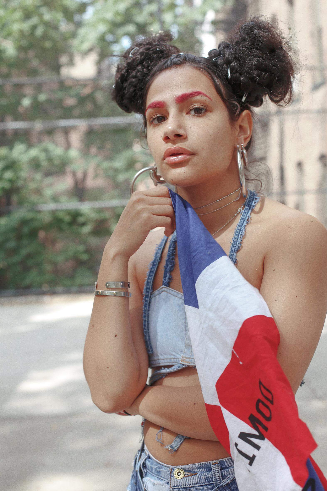

CULUTRE - 4 DOMINICAN CREATIVES ON
WHAT IDENTITY MEANS TO THEM
The chaos of the last election, and the increasingly xenophobic rhetoric it spawned, inspired New York-based, Dominican photographer Juan Veloz to think about how cross-cultural experiences are an integral part of the American tableau. Over six months, Veloz documented how he and nine other Dominican makers interpret their heritage, and its place in the fabric of New York culture amid increased aggression towards immigrants.

Genesis Vega, Model
What does being Dominican-American mean to you?
I came
to the United States when I was six years old. Thinking back to my arrival, I had no
idea how lucky I was to get here with my mom and siblings and live under one roof.
My culture weighs a lot into my personal identity because I had to work so hard to
learn English. I didn’t know much of the language when I got here so I was held back
in the second grade. It’s tough to get a job in America without knowing English, or
if you don’t have a high school diploma. Even though I decided not to pursue college,
I was blessed to create opportunities for myself and my brand.
How do you address identity in relation to the world or spaces you occupy?
Being Afro-Latina, there’s not a lot of representation at the moment. A lot of women who are
Dominican don’t identify as Afro-Latina or don’t know what it actually means. I didn’t know
what it meant a year ago, and I’m still trying to grasp more of what it means to be Afro-Latina today.
What does your identity mean to you in relation to constructs like gender and sexuality?
I grew up
in a Spanish and Pakistani household with my mother and grandmother. My mom was a Jehovah’s Witness so
boys were a big no until marriage. Having these experiences, and being raised by women, I grew to view
female empowerment as being the only sensible belief system. As I continue to mature, I see how important
it is to project my morals and my voice. I refuse to live in a world where hyper-masculine men reign over
me, especially when I know I’ve been raised by women who have instilled confidence in me.
How has your relationship with your identity evolved?
I change for the better every day. In fact,
it was in curing my insecurities that I realized how to improve my value.

Uzumaki Cepeda, Artist
What does being Dominican-American mean to you?
Being Dominican-American
means everything to me. I’m the first generation of my family to be born in America. My mom was in
an arranged marriage and came from the island with my dad who was illegal. He ended up getting
deported, so my mom really gave up everything so I could live this life. The way that I’ve come up
as an artist and my experience with being a millennial here, my mom didn’t have that privilege; that
weighs into every aspect of my life.
How do you embody this identity in your work?
I embody it in my work by creating safe spaces and only photographing black and brown people. I feel
like my point of view comes from my island, and the knowledge that colorism and racism exist there.
I can remember the struggles my parents went through because of the systematic racism that has tainted
the way so many Dominicans think about themselves.
How do you address identity in relation to the world or spaces you occupy?
When I address my identity,
I do so as an Afro-Dominican. In times like these, I try even harder to be openly proud of my brownness. I also
make it known that I’m proud of my island, especially now that we’re living with a racist president. All of these
other racists in the woodwork are proud to be out now, so it’s a very important time for everyone to be an
activist in any way they can. I address my identity through my art in the same way someone might address
theirs through writing or community organizing, or even dance.
What does your identity mean to you in relation to constructs like gender and sexuality?
I think
the history of colonization has impacted us beyond racism. There is a lot of homophobia and transphobia in our
community. My mom was alive during a time when they would kill an openly gay person and no one would give a fuck.
I feel like I’m here to break those barriers. My identity — and what it means to me as a bisexual and Dominican —
allows me to see just how much homophobia, transphobia, and misogyny have impacted the people around me. It’s
important to address it because it causes so much damage. That’s why I think it’s so important that I be proud
of my sexuality and embrace it.
Louie Vasquez, Model
What does being Dominican-American mean to you?
Being Dominican-American means that I have a unique
point of view and a second perspective on everything, almost like there’s two of me.
How does your identity show up in your work?
I look American AF, so I like to show off my Latino side through the way I dress and my Snapchat videos.
How do you address identity in relation to the world or spaces you occupy?
I do it by making changes
without permission, without judgement, and without labels.
What does your identity mean to you in relation to constructs like gender and sexuality?
In my world, there is no sexuality or gender.
How has your relationship with your identity evolved?
My identity has evolved through my self-expression in clothing.
My wardrobe is currently evolving as we speak. BRB.

Jovan Sanchez, Abstract Painter
What does being Dominican-American mean to you?
I appreciate my Dominican heritage,
but I especially appreciate being a Dominican New Yorker. Sometimes I feel like New York is the only America I
know; this city has molded me into the person I am today. I love that Dominican customs are alive and thriving
in the city.
How does your identity show up in your work?
My work inherits a rhythm and subtle confidence from my culture. I think that it mostly comes through
in my color palette and the motion of my brushstrokes.
How do you address identity in relation to the world or spaces you occupy?
I face adversity
because of my Dominican and Cuban heritage, because of my skin color, and because I’m a first-generation
American. That is something I’m aware of and have to experience, but I try to stay focused on the positive.
I’m lucky enough to live in a progressive city that embraces diversity. The world is catching up, despite
all of the issues with Trump. I think we should look at our current situation and still choose to believe
we will always overcome negativity and division.
What does your identity mean to you in relation to constructs like gender and sexuality?
Growing up
in Washington Heights, and even in the Dominican Republic, I’ve encountered many aspects of machismo throughout
my culture. I personally don’t tap into this trait. I remember my grandmother describing me as too understanding
and soft-spoken, as having a feminine touch. In my younger years I was called harsh words because of it. I’ve
experienced bullying, predominately by hyper-masculine guys, but my two sisters always had my back... I grew up
with powerful women in my life.
How has your relationship with your identity evolved?
I’m more aware of race relations as I get older.
I’m also way more in tune with current events because the world feels more complicated than when I was younger.